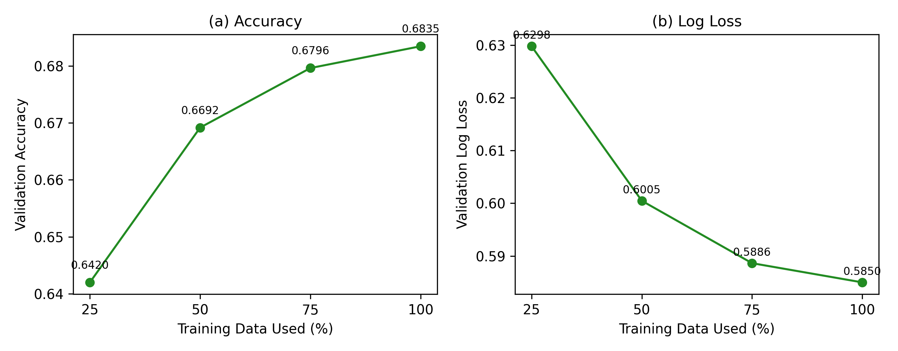
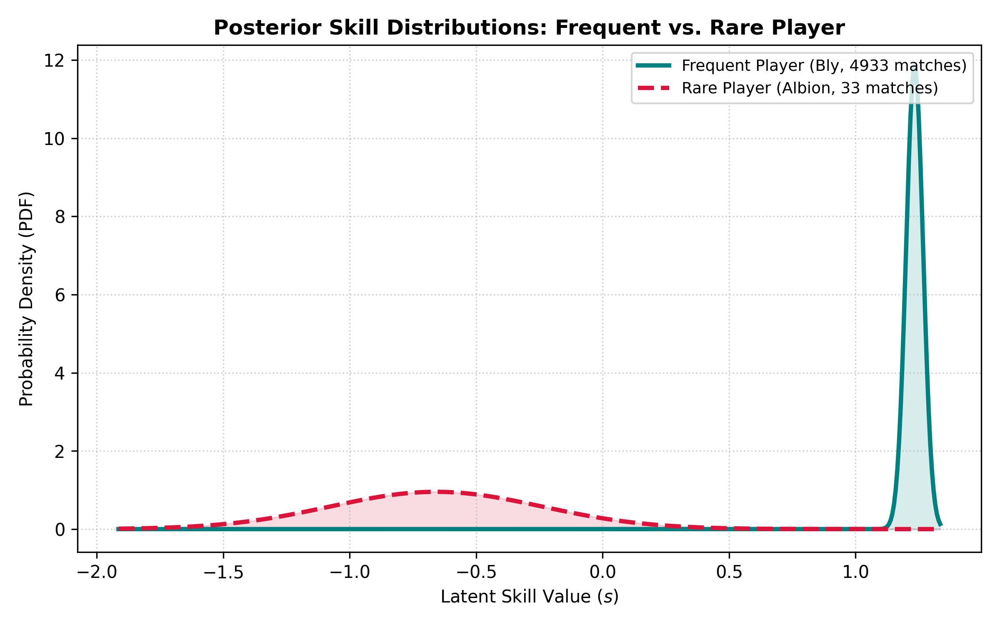

Probabilistic Machine Learning · Bayesian Inference
Bayesian Latent Skill Inference
Inferring hidden player ability from pairwise outcomes with a probabilistic latent-variable model, stochastic variational inference, and explicit uncertainty estimation.
The Inference Problem
Skill is never observed directly. The model must recover it from noisy pairwise outcomes, where the evidential value of a win depends on the strength of the opponent.
A raw win rate compresses a player's history into one aggregate statistic. That loses relational information: defeating a strong opponent and defeating a weak opponent should not contribute equally to a skill estimate.
I framed the task as latent-variable inference: each player has an unobserved skill value, while match outcomes provide indirect evidence about the relative ordering of those skills.
Probabilistic Model
The model converts relative skill into win probability, then learns a posterior distribution over each player's hidden ability.
P(i beats j) = σ(sᵢ − sⱼ)The pairwise formulation preserves opponent strength: the same win can provide different evidence depending on who was defeated.
Variational Inference with Pyro
Because the exact posterior over 999 latent skills is not available in closed form, I approximate it with a mean-field variational family and optimize the ELBO using SVI.
Pyro SVI
Experiment 1 — Baseline Comparison
The first question is whether a structured latent-skill model extracts more predictive information from the same match history than simple aggregate baselines.
Better probabilities, not just more correct labels.
The SVI model improves winner prediction over the historical baseline, but the larger gain appears in log loss. That matters because the task is fundamentally probabilistic: a useful model should assign well-calibrated probability mass to outcomes, not only cross the 50% decision threshold.
and 11.6% lower log loss than the historical win-rate baseline.
Experiment 2 — Data Scaling
I then tested whether additional match evidence makes the latent skill estimates more predictive, and where the marginal value of more data begins to flatten.

More evidence improves inference, with diminishing returns.
Accuracy increases from 0.6420 at 25% of the training data to 0.6835 at 100%, while log loss falls from 0.6298 to 0.5850. The largest gains arrive early; improvement narrows substantially from 75% to 100%.
Experiment 3 — Posterior Uncertainty
A Bayesian skill estimate should communicate how much evidence supports it. I checked this by comparing players with dramatically different observation counts.

The model knows when evidence is weak.
Bly appears in 4,933 matches and receives a sharply concentrated posterior. Albion appears in only 33 matches, so the posterior remains broad. The output is therefore not just a ranking score; it is a distribution whose width reflects evidential support.
Less evidence remains visible as uncertainty instead of being hidden behind a single deterministic score.
Experimental Setup
The benchmark is deliberately simple enough to isolate the contribution of probabilistic structure and inference quality.
What I Would Model Next
The current model isolates player identity and pairwise outcomes. The remaining error suggests several natural extensions that would make the posterior more expressive without changing the central probabilistic formulation.